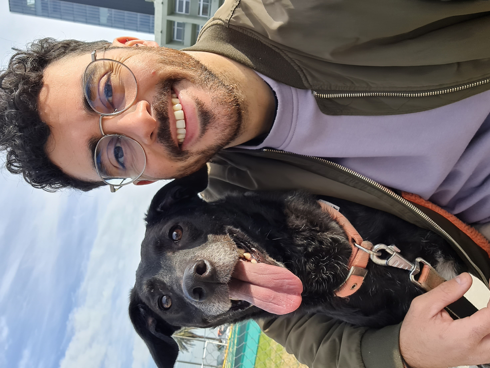

Sobre mí

¡Hola! Soy Matías Navarro, el profe.
Me encuentro incursionando en el mundo de la programación, cosa que en mi adolescencia no tuve la
oportunidad.
Soy estudiante desde que tengo memoria y espero no dejar de serlo, actualmente formo parte del programa
Jovenes a Programar.
Apasionado de la Física y su enseñanza.
Continuamente buscando lo mejor.
Incursionando recientemente en el placer de la fotografía
Un poco acerca de mi formación:
- Profesor de Educación Media, Especialidad Física. Instituto de Profesores Artigas. 2018
- Diplomatura Especialización en Física. Udelar. 2021